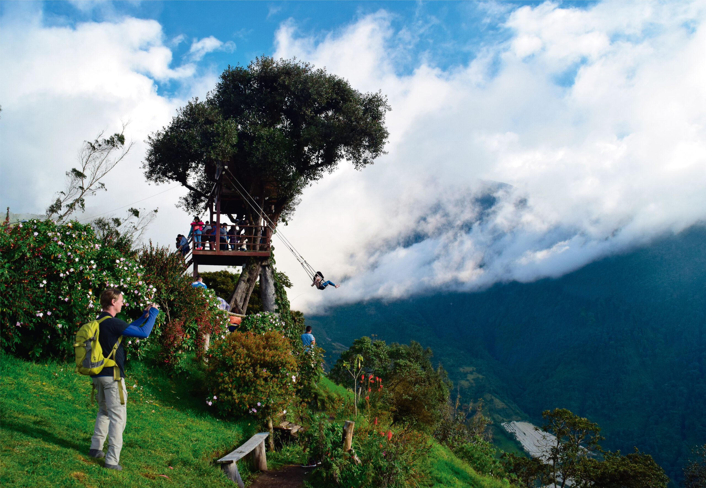
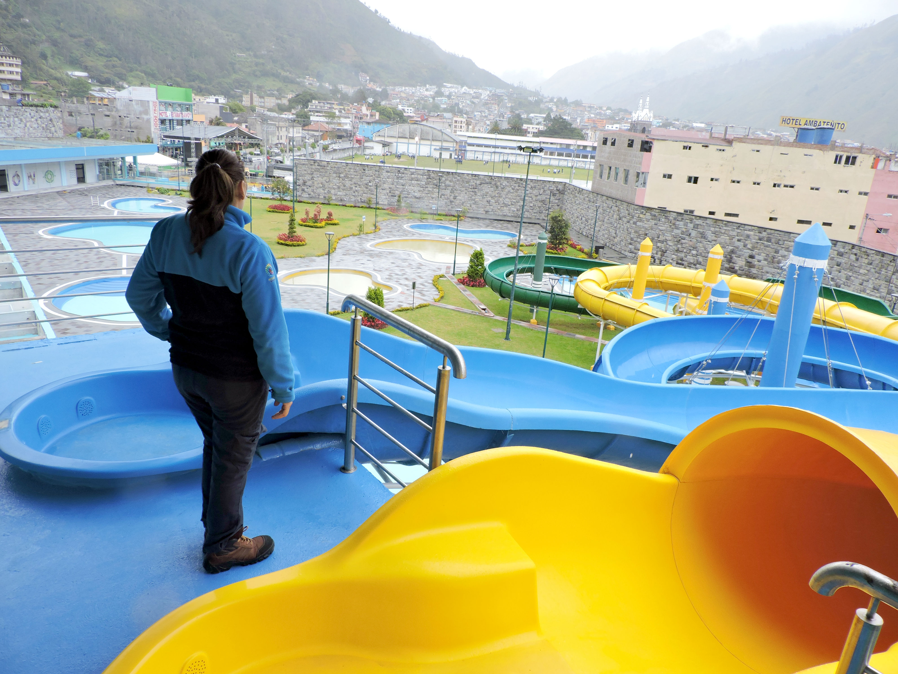
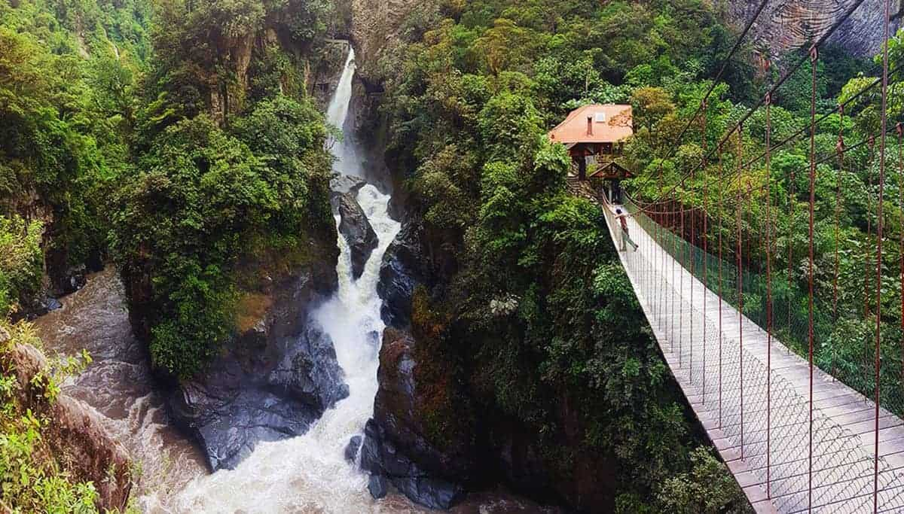

Cascada Pailón del Diablo
Una de las cascadas más famosas de Ecuador

Casa del Árbol
Hogar del famoso “Columpio del Fin del Mundo”.

Termas de la Virgen
Piscinas de agua termal natural perfectas para relajarse.

Ruta de las Cascadas
Una ruta llena de cascadas impresionantes como Manto de la Novia, Agoyán y El Fantasma.

Volcán Tungurahua
Aunque no siempre se puede acceder, los miradores ofrecen vistas espectaculares de este volcán activo.